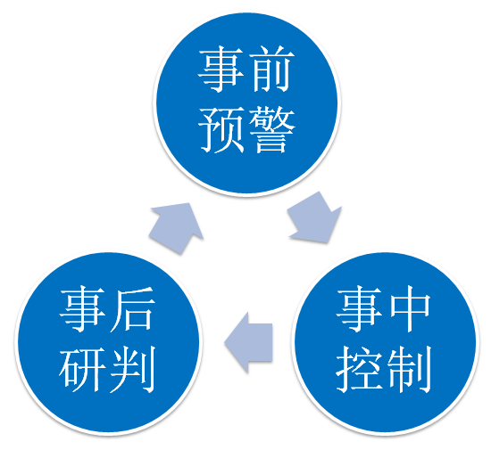
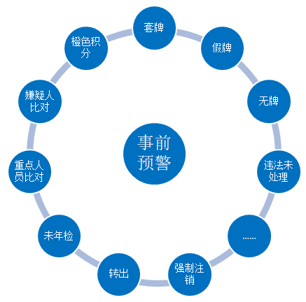
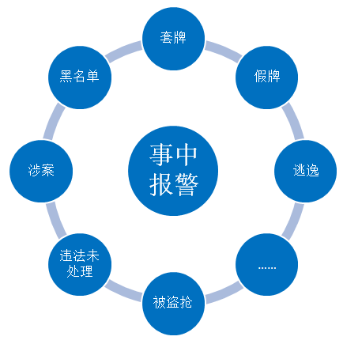
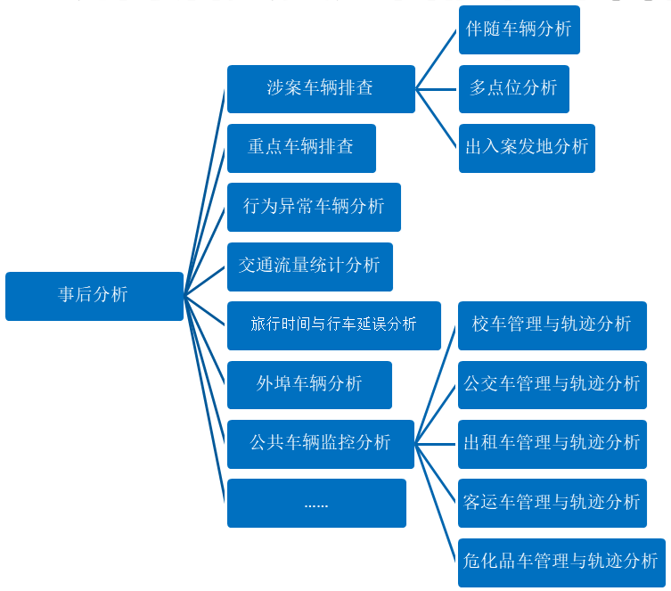

治安交通智能化综合管控平台
产品介绍
基于观澜数据自主研发TariDB大数据平台，设计和实现了治安交通智能化综合管控平台（简称观澜“管控平台”）。观澜“管控平台”采用全新的“云计算-大数据”架构，在诸多方面取得了革命性突破，达到了“国际先进”水平，完成了国内交警行业的首例落地应用。并二次荣获山东公安科技进步一等奖。
问题及背景
随着机动车数量逐年递增，道路智能采集设备采集的交通基础数据量呈爆炸性增长，交通部门面对如此海量数据，如何能够有效地进行数据的采集、传输、存储、分析和挖掘，成为摆在眼前的问题
主要问题:
1,缺乏统一规划，形成信息孤岛；
2,海量交通数据下，传统存储架构已难以满足基本的交通数据管理需求；
3,传统实时架构仅能进行简单比对，不能满足复杂的实时业务需求；
4,传统交通管理系统计算性能弱，难以应对海量数据计算需求；
5,传统交通管理系统智能化程度低，需大量人工排查。
技术支撑

分布式存储
计算技术
图数据库技术
产品特点
10亿次/秒的高速比对速度；扩展能力极强，增加服务器即可获得线性的计算性能增长。
分布式存储
平台内置了针对交通数据所做的结构优化，并将点位、网络、校时等因素考虑在内，在原始数据质量不高的情形下保持较高的结果准确度。
智能化
采用业内最广泛测试、部署的稳定的Hadoop版本，构建NameNode高可用系统，热备实现秒级切换。
稳定性
平台内置了对交通数据所做的结构优化，精确检索记录、图片延迟在0.3~1秒以内，模糊搜索速度相对传统方案和Hadoop自身方案有很大提高，达1.1亿条/秒。
高效检索主要功能
  

5大亮点
-
在PB级别数量条件下，精确检索相应速度为0.3秒~1秒，模糊搜索速度达1.1亿条/秒，支持1000用户并发使用，并可进一步扩展。
海量数据高速检索与处理
-
在1000卡口产生大数据下，仅用0.2秒~0.8秒即完成实时比对；能够在事发前判定嫌疑机动车并报警，形成“事前预警-事中控制-事后研判”的闭环工作模式。
多模型实时比对与实时预警
-
针对不同警种（如刑警、交警、技侦等）、不同行政辖区（如地市、县区等）、不同层级（如总队、支队、大队等）有完善、严格的权限隔离支持，同时在高危案情发生时支持临时借用与权限提升。
完善严谨的权限隔离支持
-
智能化分析与挖掘算法（如车辆轨迹行为分析、异常行为分析等）迅速为办案人员缩小排查范围，提高办案效率10倍以上；完善的统计分析功能可以生成多粒度结果，为城市规划等提供决策支撑。
智能化分析与挖掘统计
-
突破传统架构下单台服务器性能限制，采用“云计算-大数据”分布式集群架构，在如点位增加、前端设备采集质量提高、使用人员增多等情况出现时，只需要单点增加服务器即可使系统性能保持在最优状态。
系统可扩展性优异